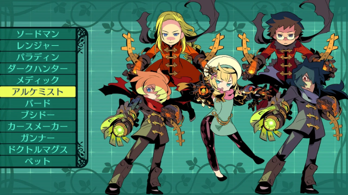

職業紹介
ソードマン
前列で戦うバランス型
剣や斧を用いて戦う近接戦闘の達人。
豊富に使える武器防具で常にバランスよく戦闘を行うことができる。
フォーススキル：フルゲイン
全身の力を武器に込めて繰り出す強烈な一撃である。
レンジャー
前後列で戦うスピード型
樹海で生き残るための技術を豊富にもつ狩人。
一撃必殺の弓術に加え常人を上回るスピードでパーティの危機を救う。
フォーススキル：夢幻陣形
尋常でない動きを引き出す力を持つ。
パラディン
前列で戦う防御特化型
自らの体を呈して仲間の盾となる聖騎士。
樹海での戦いに打ち勝つにはパラディンの守りは欠かすことはできない。
フォーススキル：完全防御
いかなる攻撃も1ターンのみ完全に防ぐという盾技である
ダークハンター
前列で戦う特殊攻撃型
長鞭を用い敵を弱らせることを得意とする狩人。
その特異なスキルをスキルを使いこなすことができるなら戦術が広がるだろう。
フォーススキル：オールボンテージ
敵の全身を封じる縛技である。
メディック
後列で仲間を癒す回復型
医術でパーティの治癒回復を担う衛生士。
戦闘能力は持たないが傷ついた仲間の為に一人は入れておきたい。
フォーススキル：超医療
全員のHPと状態異常を瞬時に回復させる医術の秘技である。
アルケミスト

後列で戦う属性攻撃型
世界の法則を研究し万物を操る異端の学士。
火・氷・雷という元素を操り超常的な力を発生させる属性攻撃職。
フォーススキル：超核熱の術式
三つの属性のどれにも属さない無属性の強力な術式である。
バード
前後列で戦う支援特化型
歌や踊りでパーティを鼓舞する吟遊詩人。
戦闘技術を全く持たない代わりに仲間を強化する支援のエキスパート。
フォーススキル：最終決戦の軍歌
攻・防・体力の3種類の強化を一瞬で行う戦歌である。
ブシドー
前列で戦う攻撃特化型
「道」と呼ばれる異国の剣術を修めた戦士。
攻撃は強烈無比だが死を美徳とする精神性を持つため防御に欠ける。
フォーススキル：一閃
カタナの一振りによって全ての敵の首を討つ伝説の剣技である。
カースメイカー
後列で戦う弱体特化型
呪いの言葉で敵の意思や生死を操る禁断の術師。
習得自体に呪われた才能を必要とするため姿を見る事自体が少ない。
フォーススキル：黄幡の呪言
敵全体に呪言を投げかけて、何らかの状態異常を付着させる。
ガンナー
後衛・属性攻撃型
様々な銃器を用いる事で遠距離からの属性攻撃を得意とする銃士。
フォーススキル：至高の魔弾
激しい威力で敵を気絶させる力を持つ
ドクトルマグス
中衛・特殊支援型
癒しと破壊の双方の力を持つ巫術を用いることで巫医と呼ばれる探究者。
フォーススキル：太古の巫道
全員のHPを全回復し、全耐性を上げる。
ペット
前衛・防御特化型
その鋭い爪で戦い、その体で見方を庇う頼りがいのある獣。
フォーススキル：究極傷舐め
パーティ全体のHPと状態異常を癒す。